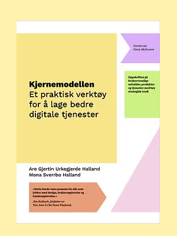

Bli ekspert på den enkle og effektive metoden som hjelper deg å:
Lær metoden direkte frå opphavsmannen, og få alt av tips, triks og malar du treng for å ta i bruk metoden umiddelbart etter kurset.

Kjernemodellen er eit praktisk og intuitivt rammeverk for å samarbeide om å lage brukarvennlege og strategisk forankra produkt og tenester.
Ring meg på 908 70 026, send epost til are@kjernekaren.no eller book ein kaffiprat.
Vi snakkast!
Are